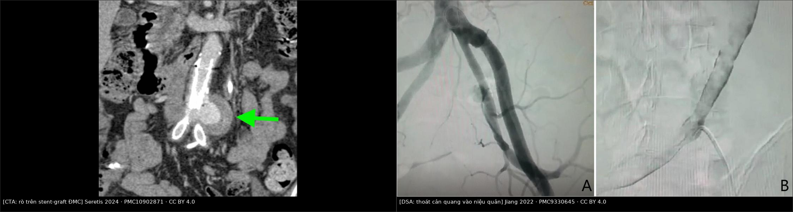
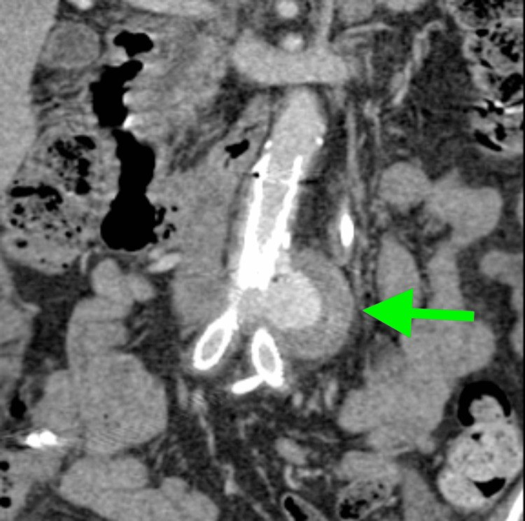
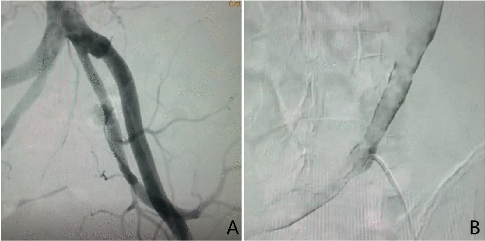
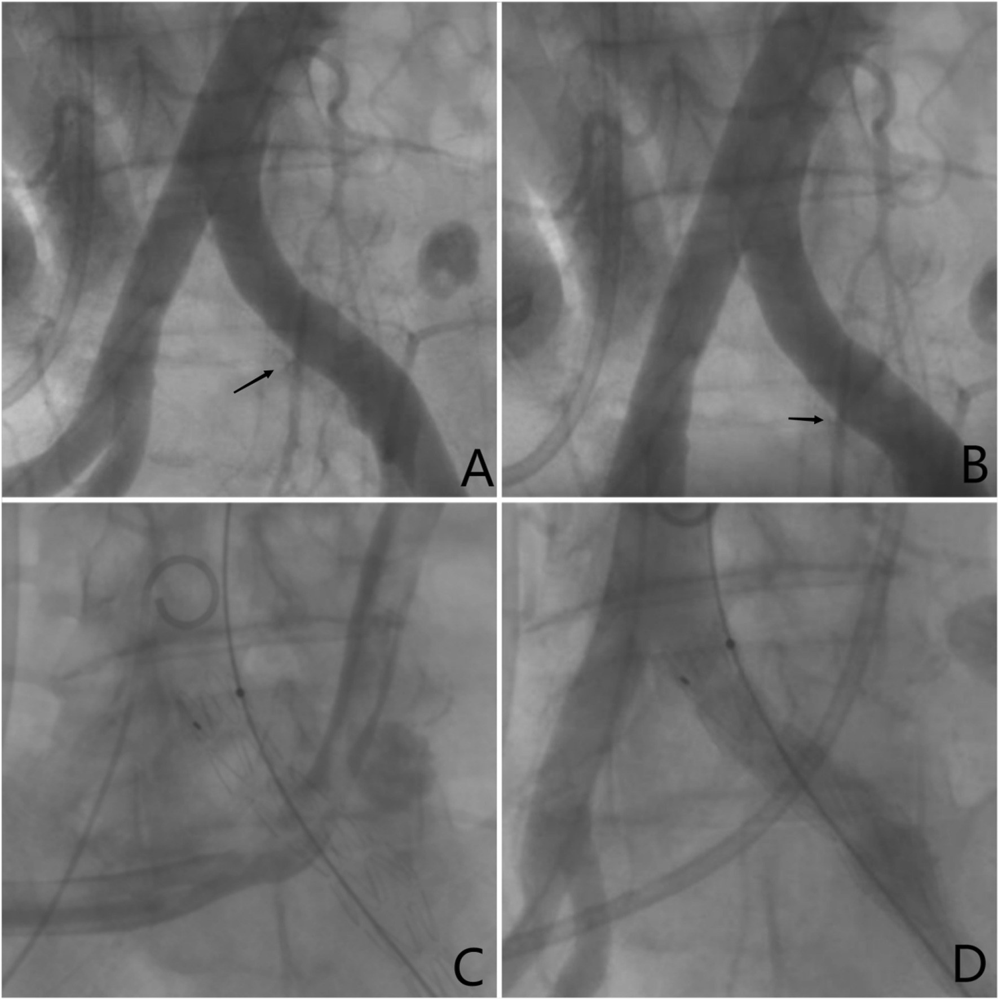
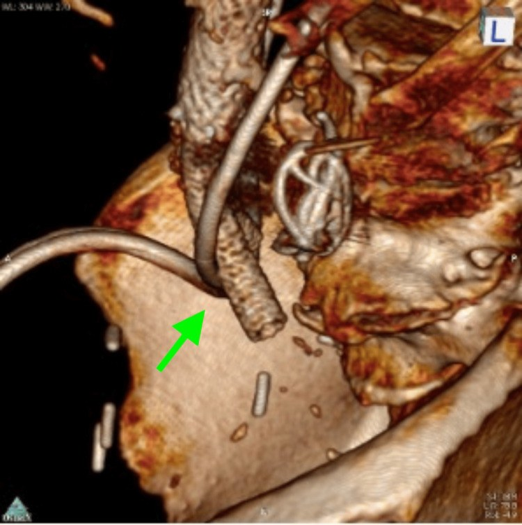

942 — Rò động mạch chủ–niệu quản (aorto-ureteric fistula, AUF): tiểu máu ồ ạt + cản quang trong niệu quản ở thì động mạch
Tags: pattern:ro-dong-mach-nieu-quan pattern:tieu-mau-o-at pattern:thoat-can-quang pattern:gia-phinh-mien-noi pattern:mat-mat-phang-mo vung:dong-mach-chu-bung vung:dong-mach-chau vung:nieu-quan vung:than protocol:CTA-bung-3-thi protocol:DSA protocol:EVAR
Mức chắc chắn (certainty): tổng hợp y văn (literature synthesis) — 1 tổng quan hệ thống 216 ca 2011–2021 kèm 2 ca nguyên văn có ảnh DSA (BMC Urol 2022, PMC9330645), 1 ca nguyên văn có 6 ảnh CTA (Cureus 2024, PMC10902871), 1 loạt 17 rò/16 bệnh nhân + tổng quan 152 ca liều điều trị nội mạch (PMC8053137), 1 loạt 5 ca nội mạch (PMC6806659). Không có thử nghiệm ngẫu nhiên; mọi ngưỡng là tổng hợp thực hành, chỗ suy luận ghi rõ.
Câu chốt: AUF là đường thông giữa niệu quản và động mạch (chủ/chậu) ở đúng chỗ niệu quản bắt chéo mạch. Bệnh cảnh điển hình không phải "sỏi niệu quản" mà là tiểu máu ồ ạt, ngắt quãng, tái diễn nhiều đợt, ở người có stent niệu quản lâu dài ± xạ trị ± mổ chậu; đợt chảy máu tự cầm rồi bùng lại. Dấu chốt trên CTA là cản quang trong lòng niệu quản ở thì động mạch (25–35 giây) — bình thường niệu quản chỉ có cản quang ở thì bài tiết 5–15 phút. Bỏ sót = mất máu ồ ạt; tử vong 10–20%, tới 22% nếu nhập viện trong sốc (PMC6806659).
1. Tổng quan bệnh học – cơ chế hình ảnh (TẠI SAO)
1.1 Dịch tễ và bối cảnh
- Tần suất: rất hiếm — 235 ca được báo cáo tính đến tổng quan 2022, ca đầu tiên do Moschcowitz mô tả năm 1908 (PMC10902871). Số ca tăng mạnh từ khi stent niệu quản ra đời năm 1978: trước đó chỉ 12 ca, đến 2022 là 235 ca (PMC10902871).
- Nguyên phát vs thứ phát: 15% nguyên phát (phình/giả phình động mạch ăn mòn niệu quản) và 85% thứ phát (sau mổ chậu, xạ trị, stent niệu quản lâu dài, bệnh động mạch ngoại biên) — PMC9330645.
- Loạt 445 bệnh nhân: 80% có stent niệu quản lưu lâu dài, 70% có tiền sử ung thư chậu, và phần lớn rò xảy ra đúng chỗ niệu quản bắt chéo động mạch chậu chung (PMC9330645).
- Tổng quan 216 ca (2011–2021, 92 bài): ung thư 173 ca, stent niệu quản 187 ca, xạ trị 136 ca, phình/giả phình động mạch chậu 19 ca, mổ mạch 21 ca; 131 nữ / 82 nam, tuổi trung bình 65,1 (35–90) — PMC9330645.
- Tử vong: 66% trước 1980 → 13% gần đây (PMC10902871); các tổng quan khác ghi 10–20% và tăng khi chẩn đoán trước mổ bị chậm (PMC9330645), 10–13%, riêng 22% nếu nhập viện trong tình trạng huyết động không ổn định (PMC6806659).
1.2 Sinh lý bệnh — vì sao niệu quản bị "ăn mòn"
- Điểm cố định giải phẫu: niệu quản nằm sau phúc mạc, bắt chéo động mạch chậu chung ở khung chậu; hai cấu trúc không có lớp mỡ đệm đủ dày ở người đã mổ/xạ (dính, xơ hóa) → thành niệu quản áp sát thành động mạch.
- Vật rắn trong lòng + mạch đập: stent niệu quản cứng (đặc biệt stent kim loại toàn chiều dài) ép niêm mạc niệu quản vào thành mạch; áp lực đập của động mạch (tần số 60–100/phút) gây thiếu máu cục bộ thành niệu quản rồi thành động mạch → loét → dò (PMC10902871; PMC9330645).
- Xạ trị làm mô xơ, mất khả năng sửa chữa: mạch nuôi thành niệu quản bị tổn thương → vết loét không lành, tiến triển thành lỗ dò.
- Cơ chế "ngắt quãng": khi lỗ dò chảy, huyết áp tụt + cục máu đông bịt lỗ + niệu quản co thắt → cầm máu tạm; vài ngày sau cục máu tan/rửa trôi → chảy lại ồ ạt. Đây là lý do bệnh nhân có nhiều đợt tiểu máu cách nhau, bị điều trị như "nhiễm khuẩn tiết niệu" hoặc "viêm bàng quang xạ", và nhiều lần chụp hình âm tính (2 ca PMC9330645: CT và MRI đều không tìm được nguyên nhân trước khi chụp mạch).
1.3 TẠI SAO nhìn thấy trên CT (vật lý + thời điểm)
| Đại lượng | Con số | Ý nghĩa đọc phim |
|---|---|---|
| Cản quang trong động mạch | 300–400 HU | Mốc "máu động mạch" |
| Nước tiểu (niệu quản) thì động mạch | 0–20 HU | Niệu quản phải tối ở thì này |
| Cản quang bài tiết trong niệu quản | 5–15 phút, thường 500–1.500 HU | Chỉ xuất hiện ở thì muộn — nếu thấy sớm là bất thường |
| Mỡ quanh niệu quản–động mạch | −100 đến −50 HU | Mất mặt phẳng mỡ = dấu sớm của dính/xơ |
| Vôi hóa/túi phình thành mạch | > 400 HU | Gián đoạn vôi hóa tại chỗ dò là dấu định vị |
| Thì động mạch | 25–35 giây | Thời điểm duy nhất chứng minh dò |
| Thì tĩnh mạch | 70–90 giây | Trước khi cản quang xuống niệu quản do bài tiết |
- Nguyên lý chốt: cản quang đi tắt qua lỗ dò vào lòng niệu quản → niệu quản sáng ngang động mạch ở thì động mạch. Trên MPR coronal, thấy một "đoạn niệu quản trắng" nối liền với động mạch, dài vài mm đến vài cm, kèm giả phình nhỏ ở chỗ bắt chéo. Đây là dấu đặc hiệu nhưng không liên tục — chỉ thấy khi đang chảy máu.
- Vì sao CTA có thể âm: khi cục máu bịt lỗ dò, không có dòng cản quang đi qua; CT chỉ còn mất mặt phẳng mỡ + dày thành + stent áp sát mạch. Vì vậy CTA âm không loại trừ AUF — phải chụp lại khi đang chảy hoặc chuyển DSA (PMC9330645; PMC8053137).
- Vì sao thận ứ nước cùng bên: cục máu đông trong niệu quản + stent bị bít → ứ nước/thận to cùng bên; đây là dấu phụ rất hay gặp nhưng dễ bị quy cho sỏi.
2. Mẫu hình + chẩn đoán phân biệt theo cơ chế & vị trí (Gamut)
- Theo cơ chế: nguyên phát 15% (phình/giả phình động mạch ăn mòn niệu quản, thường ở người có phình chậu) vs thứ phát 85% (stent lâu dài ± xạ ± mổ chậu) — PMC9330645.
- Theo vị trí (quan trọng nhất):
- Động mạch chậu chung — thường gặp nhất (chỗ niệu quản bắt chéo);
- chỗ chia đôi động mạch chủ (ca PMC10902871: niệu quản trái bắt chéo ngay trên chỗ chia đôi);
- động mạch chậu ngoài (sau mổ chậu rộng, ghép mạch);
- động mạch chủ bụng — hiếm, thường sau stent-graft ĐMC;
- động mạch chậu trong — hiếm, sau can thiệp.
- Ba trụ nguy cơ — nhớ "STENT": Stent niệu quản lưu lâu (yếu tố mạnh nhất, 80–87% ca), Tia xạ vùng chậu, Endovascular/stent-graft động mạch chủ–chậu, Ngoại khoa chậu (cắt bàng quang, cắt tử cung, mổ trực tràng), Tumor (ung thư chậu tiến triển).
- Họ hàng "rò động mạch chủ": AUF là mặt thứ ba của cùng một nhóm bệnh — xem 938 (rò ĐMC–ruột) và 939 (rò ĐMC–tĩnh mạch chủ); cùng cơ chế "vật liệu nhân tạo/túi phình ăn mòn cơ quan kề", nhưng biểu hiện và đường can thiệp khác nhau.
3. Bảng so sánh phân biệt (ma trận đối chiếu)
| Thực thể (entity) | Hình ảnh điển hình | Chốt vào (rule-in) | Chốt loại (rule-out) | Gợi ý xác nhận |
|---|---|---|---|---|
| AUF (rò niệu quản–ĐM chậu/ĐMC) | Cản quang trong lòng niệu quản ở thì động mạch tại chỗ bắt chéo; giả phình nhỏ; mất mặt phẳng mỡ; stent áp thành mạch; ứ nước cùng bên | Niệu quản sáng 300–400 HU ở 25–35 giây + giả phình tại chỗ bắt chéo | Cản quang trong niệu quản chỉ ở thì bài tiết (5–15 phút) → không phải rò | CTA 3 thì lát ≤ 1 mm + MPR; DSA khi đang chảy (chẩn đoán 69% ca, 100% nếu kéo/đẩy stent lúc chụp) |
| AUF sau stent-graft ĐMC (endoleak ăn mòn) | Stent-graft cũ, endoleak + cản quang quanh graft, niệu quản dính, tiểu máu tái phát sau nhiều tháng–năm | Endoleak + cản quang vào niệu quản; túi không teo | Không endoleak, không cản quang ngoài lòng → chưa dò | CTA 3 thì; so phim cũ; DSA + bơm qua catheter |
| Sỏi niệu quản | Nốt tăng đậm độ 300–1.000 HU trên phim KHÔNG cản quang, nằm trong lòng; dấu hiệu viền (rim sign); không có cản quang lòng mạch | Đậm độ cao trên phim không cản quang + không ngấm ở thì động mạch | Có cản quang lòng mạch đi vào niệu quản ở thì động mạch → là rò | So phim không cản quang; siêu âm thấy sỏi + bóng lưng |
| Ung thư biểu mô niệu quản / tái phát bàng quang | Khối đặc trong lòng niệu quản, ngấm thuốc dạng nốt, không thoát mạch | Khối trong lòng, ngấm thuốc thì muộn, không có dòng thoát từ động mạch | Thấy lỗ dò + cản quang từ động mạch → loại u đơn thuần | Nội soi + sinh thiết; nhưng không sinh thiết khi nghi rò |
| Viêm bàng quang xạ / chảy máu do xạ | Niêm mạc dày, không có tổn thương mạch, không cản quang ngoài lòng | Tiểu máu + tiền sử xạ, mạch bình thường, không dò | Giả phình + dòng cản quang vào niệu quản → là rò, không phải chỉ viêm xạ | CTA; soi bàng quang thấy máu từ một lỗ niệu quản |
| Giả phình động mạch chậu đơn thuần (chưa dò) | Túi cản quang cạnh mạch, không thông với niệu quản | Túi ngấm thuốc nhưng không có cản quang trong niệu quản | Có cản quang lòng niệu quản cùng thì → đã dò | CTA + DSA; theo dõi kích thước |
| Rò ĐMC–ruột (bài 938) | Khí trong túi/quanh graft, ruột dính, máu báo, nôn/đi cầu máu | Khí ngoài lòng + XHTH + ruột dính | Tiểu máu đơn thuần, không khí, không XHTH → nghĩ AUF | Nội soi + CTA (bài 938) |
| Rò ĐMC–tĩnh mạch chủ (bài 939) | IVC ngấm đồng thời với ĐMC, mất mặt phẳng mỡ, phù chi, suy tim cung lượng cao | IVC ngấm sớm + suy tim cầu lượng cao | Không ngấm IVC sớm → không phải ACF | CTA 3 thì (bài 939) |

Trái: CTA coronal ca 79 tuổi sau cắt bàng quang — endoleak (mũi tên xanh) quanh stent-graft cũ ở chỗ chia đôi ĐMC, nơi niệu quản trái có J-stent bắt chéo. Phải: DSA chậu trái — (A) thoát cản quang từ động mạch chậu chung vào niệu quản, (B) catheter đi qua lỗ dò vào niệu quản. Ảnh ghép letterbox từ 2 nguồn CC BY 4.0 (PMC10902871; PMC9330645).Ba dấu hiệu định vị lỗ dò (đọc theo thứ tự)
- Niệu quản và động mạch "dính" nhau — mất lớp mỡ −100 đến −50 HU giữa hai cấu trúc, thành dày.
- Giả phình/túi phình nhỏ đúng tại điểm bắt chéo (đường kính vài mm đến 2–3 cm).
- Cản quang trong lòng niệu quản ở thì động mạch — dấu chốt, chỉ dương khi đang chảy.
4. Protocol chụp + xử trí
4.1 Chẩn đoán hình ảnh
- CTA bụng–chậu 3 thì (không cản quang → động mạch → tĩnh mạch/bài tiết), lát ≤ 1 mm, MPR coronal/curved planar dọc niệu quản và dọc trục mạch; bắt đầu từ trên chỗ chia đôi ĐMC xuống hết khung chậu.
- Chụp khi đang chảy máu (bệnh nhân vừa tiểu máu đỏ) — thời điểm quyết định độ nhạy. CTA âm không loại trừ.
- DSA là chuẩn: trong 139 ca tổng quan, DSA chẩn đoán 69%; kéo/đẩy stent niệu quản trong lúc chụp nâng lên 100%; chụp niệu quản ngược dòng có kích thích (provocative) chỉ 63% (PMC9330645).
- Nội soi bàng quang: thấy máu phun theo nhịp mạch từ một lỗ niệu quản — dấu lâm sàng rất gợi ý, nhưng không được đặt stent mù vì có thể làm lỗ dò to hơn.
- Bóng chèn (balloon tamponade) trong niệu quản là biện pháp cầm máu tạm thời đã dùng trong ca PMC6806659, giúp ổn định để chuyển can thiệp.
4.2 Điều trị
- Nội mạch là lựa chọn đầu tay: stent-graft phủ (covered stent) ± nút mạch coil — trong tổng quan 152 ca, đặt stent-graft 92,1%, chỉ nút mạch 7,9% (PMC8053137).
- Kết quả: kỹ thuật thành công 100%; hết tiểu máu trong đợt nằm viện 82,4% (14/17); tái phát 11,8% (18/152) — phần lớn trong năm thứ 1–2, có ca tái phát ngày 8 và 13 sau can thiệp; tắc stent 5%, nhiễm stent-graft 3,6%, biến chứng chung 13,8%, tử vong do AUF 3,3% (PMC8053137).
- Nhiễm là giới hạn của nội mạch: stent-graft đặt trong vùng nhiễm/nhiễm tiềm ẩn → nhiễm muộn, phải kháng sinh dài hạn, có ca dùng ciprofloxacin suốt đời để dự phòng nhiễm khuẩn tiết niệu (PMC6806659); nhiễm stent-graft là biến chứng "đáng sợ" buộc lấy graft (PMC10902871).
- Mổ hở (cắt đoạn mạch + ghép, bypass ngoài giải phẫu + cắt bỏ đoạn nhiễm) khi: nhiễm stent-graft, thất bại nội mạch, lỗ dò lớn, bệnh nhân trẻ ổn định.
- Cầu nối chiến lược: nội mạch thường chỉ là "bridge" — graft sẽ nhiễm dần và phải lấy về sau (PMC10902871).
- Kháng kết tập tiểu cầu đơn trị giúp stent-graft bền; theo dõi CTA 1–3–6–12 tháng rồi hằng năm, tìm endoleak/tái phát (PMC8053137).
flowchart TD
A[Tiểu máu ồ ạt ngắt quãng + stent niệu quản/xạ trị/mổ chậu] --> B[CTA bụng–chậu 3 thì, lát ≤ 1 mm]
B --> C{Cản quang trong niệu quản ở thì động mạch?}
C -->|Có| D[AUF — đo vị trí, giả phình, mức dính, thận ứ nước]
C -->|Không| E{Mất mặt phẳng mỡ + stent áp thành mạch + giả phình?}
E -->|Có| F[Nghi AUF cao — chụp lại khi đang chảy hoặc DSA]
E -->|Không| G[Tìm nguồn khác: sỏi, u niệu quản, viêm bàng quang xạ]
F --> H[DSA ± kéo stent: dương tính 100%]
D --> I{Bệnh nhân ổn định / có nhiễm?}
H --> I
I -->|Không nhiễm| J[Stent-graft phủ ± coil — nội mạch]
I -->|Nhiễm stent-graft / thất bại| K[Mổ: cắt đoạn + bypass ngoài giải phẫu]
J --> L[Kháng sinh dài hạn + kháng kết tập đơn trị + CTA 1–3–6–12 tháng]
K --> L
5. Biến thể bình thường và cạm bẫy
- Cản quang trong niệu quản do lần chụp trước: bệnh nhân vừa chụp CT có cản quang 5–15 phút trước → niệu quản sáng ở thì muộn; phải xem thì động mạch, và hỏi lịch chụp. Đây là giả dương hay gặp nhất.
- CTA âm khi không chảy máu: lỗ dò bị cục máu bịt; chỉ còn mất mặt phẳng mỡ. Không được kết luận "không rò" — hẹn chụp lại khi có đợt tiểu máu, hoặc DSA.
- Stent kim loại gây nhiễu mạnh: dải giả ảnh dọc stent che lỗ dò; dùng lát mỏng + MPR + cửa sổ mạch, và chụp thì không cản quang để thấy stent/vôi hóa.
- Nội soi niệu quản "bình thường" không loại trừ: niêm mạc quanh lỗ dò có thể chỉ "sần" (ca PMC9330645: niêm mạc sần cách lỗ niệu quản 15 cm, chẩn đoán chỉ đặt được khi chụp mạch đúng lúc).
- Thay stent định kỳ có thể khởi phát chảy máu ồ ạt: 2 ca trong PMC9330645 chảy máu ngay sau thay stent — động vào stent ở bệnh nhân nguy cơ phải chuẩn bị sẵn khả năng can thiệp.
- Bỏ sót vì "thận ứ nước + sỏi": AUF thường kèm ứ nước cùng bên; nếu chỉ điều trị sỏi/đặt stent mà không nhìn mạch, bệnh nhân có thể tử vong trong đợt sau.
- Sốc không loại trừ, và sốc cũng không bắt buộc: chỉ 41,2% ca nhập viện trong sốc (PMC8053137); nhiều ca ổn định huyết động giữa các đợt.
6. Tự lượng giá — Blind Quiz
Ca 1 — Nam 79 tuổi, cắt toàn bộ bàng quang vì ung thư 1 năm trước, hai niệu quản đưa ra một lỗ niệu quản tạo hình ở hố chậu phải; nhiều đợt tiểu máu, lần này sốc giảm thể tích, Hb 6,7 g/dL.

- Gợi ý lâm sàng: tiểu máu tái diễn nhiều đợt, đã can thiệp mạch 4 tháng trước, không có hồ sơ.
- Câu hỏi: Có gì bất thường quanh stent-graft? Vì sao đây là tái phát của rò chứ không phải "endoleak đơn thuần"? Bước tiếp theo?
Bấm để hiện đáp án (findings + chẩn đoán)
- Dấu hiệu: cản quang ngoài lòng stent-graft (mũi tên xanh) ở chỗ chia đôi ĐMC, nơi niệu quản trái có J-stent bắt chéo; bệnh nhân có giả phình ĐMC nhiễm khuẩn đã được bịt bằng coil + stent trần 4 tháng trước.
- Chẩn đoán: AUF tái phát do endoleak — máu vẫn đi qua lỗ dò vào niệu quản. Xử trí: "xây lại" toàn bộ stent-graft từ bên trong, thêm vascular plug ở động mạch chậu chung trái + bypass đùi–đùi để chuyển dòng khỏi lỗ dò.
- Vì sao khó: không có hồ sơ → tưởng là endoleak type I thông thường; đây là cạm bẫy "thiếu thông tin can thiệp cũ".
- Nguồn ảnh: Seretis KG và cs., Cureus 2024 (PMC10902871), CC BY 4.0.
Ca 2 — Nam 74 tuổi, cắt bàng quang tận gốc + niệu quản da, stent J thay mỗi 3 tháng; tiểu máu ồ ạt + đau hông lưng, huyết động không ổn định.

- Gợi ý: 3 ngày sau thay stent thì chảy máu; CT có cản quang trước đó chỉ thấy ứ nước bể thận trái.
- Câu hỏi: Dấu hiệu nào chứng minh rò? Vì sao CT trước đó âm tính? Can thiệp gì đã cầm máu?
Bấm để hiện đáp án (findings + chẩn đoán)
- Dấu hiệu: (A) thoát cản quang từ động mạch chậu chung trái vào niệu quản đúng chỗ bắt chéo; (B) catheter đi qua lỗ dò vào trong niệu quản — bằng chứng trực tiếp.
- Chẩn đoán: AUF sau stent niệu quản lâu dài. CT âm vì chụp lúc không chảy máu; ứ nước do cục máu + stent bít.
- Xử trí: stent-graft phủ heparin trong động mạch chậu trái; hết tiểu máu, ra viện ngày 5. Ảnh 4 ô dưới: (A,B) trước — thoát cản quang vào niệu quản; (C,D) sau stent-graft — không còn thoát.

- Nguồn ảnh: Jiang Z và cs., BMC Urol 2022 (PMC9330645), CC BY 4.0.
Ca 3 — Nam 79 tuổi (tiếp ca 1): nhìn 3D volume rendering, mô tả quan hệ giữa stent niệu quản và mạch.

- Câu hỏi: Cấu trúc nào bắt chéo cấu trúc nào? Vì sao vị trí này là "điểm nóng" của AUF? Có cần chụp thêm gì trước can thiệp?
Bấm để hiện đáp án (findings + chẩn đoán)
- Dấu hiệu: J-stent niệu quản trái bắt chéo ngay trên chỗ chia đôi động mạch chủ, sát túi/giả phình và stent-graft — không có lớp mỡ đệm.
- Vì sao: đây là điểm cố định giải phẫu giữa niệu quản sau phúc mạc và mạch chậu; stent cứng + mạch đập → loét → dò.
- Trước can thiệp: DSA để xác định chính xác lỗ dò và đo đường kính mạch chọn stent-graft; chuẩn bị khả năng nút coil nhánh.
- Nguồn ảnh: Seretis KG và cs., Cureus 2024 (PMC10902871), CC BY 4.0.
Bài liên quan chéo
- 938 – Rò động mạch chủ–ruột (AEF)
- 939 – Rò động mạch chủ–tĩnh mạch chủ (ACF)
- 170 – Phình động mạch chủ bụng
- 920 – Nút mạch can thiệp
- 901 – Tổng quan can thiệp
Ảnh
942_ro-dong-mach-chu-nieu-quan_CT_PMC10902871-F1.jpg— CTA coronal, endoleak quanh stent-graft (CC BY 4.0).942_ro-dong-mach-chu-nieu-quan_CT_PMC10902871-F3.jpg— 3D VR, J-stent bắt chéo chỗ chia đôi ĐMC (CC BY 4.0).942_ro-dong-mach-chu-nieu-quan_DSA_PMC9330645-F1.jpg— DSA 4 ô: thoát cản quang trước và sau stent-graft (CC BY 4.0).942_ro-dong-mach-chu-nieu-quan_DSA_PMC9330645-F2.jpg— DSA 2 ô: thoát cản quang + catheter qua lỗ dò (CC BY 4.0).images/composite_auf_cta-vs-dsa.jpg— ảnh ghép đối chiếu (chỉ từ nguồn CC BY 4.0).- Nguồn + giấy phép từng ảnh:
images/CREDITS.md; link gốc:sources.md.
Không dùng để chẩn đoán độc lập khi chưa có người hướng dẫn.